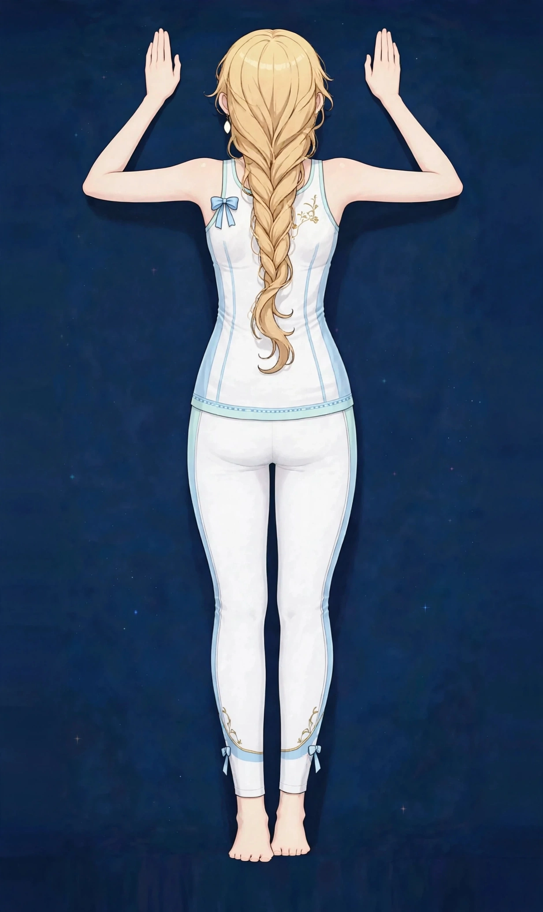

梅田で背中の張りケア｜肩甲骨の内側・呼吸の浅さが気になる方に疲労・張り

肩甲骨の内側あたりがいつも張っている、深く息を吸いにくい——背中の張りは、姿勢のクセと深く関係しています。自分では触りにくい部位のため、疲れがたまりやすい場所でもあります。
背中の張りはどんな状態か
背中の張りは、肩甲骨の内側から背中の中央、腰の上あたりまで、広い範囲の重さや突っ張り感をまとめて表す言葉です。背中には姿勢を支える筋肉が何層にも重なっていて、自分では触りにくく、ほぐしにくい場所でもあります。そのため負担に気づきにくく、たまってから「いつも張っている」と自覚する方が多い部位です。
肩甲骨の内側の張りは、腕を前に出して作業する姿勢とつながりが深く、呼吸の浅さと一緒に感じる方もいます。背中は体の背面全体の中心にあるため、肩・首・腰の負担が集まる場所でもあり、背中だけを見ずに前後のバランスで捉えることが大切です。
こんなサインはありませんか？ — 背中の張りのチェックリスト
- 肩甲骨の内側が張っている
- 深く息を吸いにくい気がする
- 背中を自分でほぐせない
- 猫背と言われることがある
- 背中を壁につけると、肩甲骨まわりだけ浮く感じがする
- 腕を前に出す作業のあとに背中が重くなる
- 深呼吸をすると背中が突っ張る感じがする
- 背中を丸めると一時的に楽になる気がする
当てはまる項目が多いほど、負担がたまりやすい生活が続いている可能性があります。次の「要因」と見比べて、どこに負担が集まっているか確かめてみてください。
背中の張りにつながりやすい要因
- 前かがみ姿勢の継続：パソコンや家事、育児などで腕を前に出す姿勢が続くと、肩甲骨が外へ引っ張られ、内側の筋肉が伸ばされながら働き続けます。これが肩甲骨の内側の張りの代表的な背景です。
- 胸側の縮こまり：体の前面、特に胸の筋肉が縮こまると、背中側は引き伸ばされる形になります。背中の張りは、前面とのバランスの問題として表れることが少なくありません。
- 呼吸の浅さ：緊張が続くと呼吸は浅く速くなりがちです。背中まで空気が入るような深い呼吸が減ると、背中まわりの筋肉の動きも小さくなり、張りが抜けにくくなります。
- 腕と荷物の負担：重いバッグを片側で持つ、子どもを抱っこするといった片寄った負担は、背中の左右差を生み、張る場所を固定しやすくします。
- 冷えと姿勢の固定：冷房の風が背中に直接当たる環境や、長時間同じ姿勢でいる環境では、背中の筋肉がこわばったまま固まりやすくなります。
- 睡眠と寝具：マットレスが柔らかすぎると背中が沈み込み、硬すぎると肩甲骨まわりが圧迫され続けます。朝から背中が重い日は寝具の影響も考えられます。
図1｜背中まわりの主な筋肉（背面）

東洋医学から見た考え方
東洋医学では、背中は体の中心を支える大きな巡りの通り道が走る場所とされます。張りが強い状態は、巡りが滞っているサインのひとつと捉え、広い範囲をゆったりほぐすことで全身のバランスを見る視点を大切にします。
背中には、背骨の両脇を頭から腰まで縦に走る膀胱経と、背骨の中央を上る督脈という大きな通り道があります。肩甲骨の上には小腸経が巡り、呼吸に関わる肺経とも関連づけて見立てます。背中の張りは一点ではなく、背骨に沿ったライン全体の巡りとして捉えるのが東洋医学の考え方です。
代表的なツボ
背中のツボは自分では手が届きにくい場所が多く、ご自宅ではテニスボールなどを使って体重で軽く圧をかける方法が取り入れやすいケアです。強く押しすぎず、心地よい範囲で行ってください。
位置：肩甲骨の内側の縁、背骨から指4本ほど外側あたり。触れ方：仰向けで背中の下にテニスボールを置き、体重を少しずつ預けて小さく揺らします。肩甲骨の内側の張りでよく挙げられるツボです。
位置：背骨の上部、首の付け根から数えて3つ目の骨の外側、指2本分ほど離れた場所。触れ方：パートナーに押してもらうか、ボールで軽く圧をかけます。呼吸の浅さと一緒に意識されることのあるツボです。
図2｜背中のツボの位置（背面）
おすすめ施術
オイルマッサージ
手のひら全体を使い、背中全体を大きくほぐします。183cmの体格を活かした幅広いストロークと深い圧で、肩甲骨まわりまで丁寧にケアします。
進め方は、手のひら全体で背中を大きく温めながらほぐし、肩甲骨の内側や背骨の両脇など張りの強い部分へ、体重を活かした深い圧をゆっくり重ねていく流れです。183cmの体格を活かした幅広いストロークで、背中全体をひと続きとしてケアします。
背中の張りが猫背や巻き肩と重なっている場合は、胸側をほぐす美容整体との組み合わせもご提案しています。前後のバランスが変わると、背中の感じ方も変わってきます。当日は姿勢の気になる点も含めてうかがいます。
自宅でできるセルフケア
背中は手が届きにくいため、道具を使うケアと、胸側を伸ばすケアを組み合わせるのが基本です。痛みやしびれが出る場合は無理をせず中止し、続く場合は医療機関にご相談ください。
- 1．壁エンジェル壁に背中と後頭部をつけて立ち、腕を「バンザイ」の形からゆっくり下ろす動きを5回。肩甲骨が背中の上を滑る感覚を意識し、腰が反りすぎないようお腹に軽く力を入れます。
- 2．テニスボールほぐし仰向けで肩甲骨の内側の下にテニスボールを置き、体重を少しずつ預けて小さく体を揺らします。片側1分ほどが目安です。背骨の真上には置かないでください。
- 3．胸を開くストレッチドア枠に前腕をつけ、体を少し前に進めて胸の前側を20秒伸ばします。背中だけをほぐすより、縮こまった前面を伸ばす方が背中の張りが戻りにくくなります。左右同様に行います。
- 4．深呼吸で背中を動かす椅子に座って両手を膝に置き、背中に空気を入れるイメージでゆっくり吸い、長く吐く呼吸を3回。背中の筋肉は呼吸でも動くため、浅くなった呼吸のリセットになります。
図3｜セルフケア「壁エンジェル」の手順
場面別の注意
デスクワーク中
腕を前に出した姿勢ほど背中は引っ張られます。1時間に一度は椅子から立ち、肩甲骨を寄せる動きを数回入れてください。モニターとの距離が近いと前かがみが深くなるため、距離の見直しも有効です。
抱っこや家事が多い日
片側に負担が寄る日は、反対側の肩甲骨を意識して動かすだけでも左右差の固定を防げます。重い荷物はリュックにする、左右で持ち替えるといった工夫も背中の負担を分散します。
就寝前
背中が張ったまま眠ると、朝まで同じ緊張が続きやすくなります。寝る前のボールほぐしや深呼吸で一度リセットしてから布団に入る習慣を作ってみてください。
受診の目安
次のような場合は、サロンでのケアの前に医療機関への受診をおすすめします。
- 背中の痛みに加えて、腕や脚にしびれがある
- 発熱や体重の急な減少を伴っている
- 転倒や事故のあとから痛みが出た
- 安静にしていても痛みが強くなる、夜間に痛みで目が覚める
- 胸の圧迫感や息苦しさを伴っている
当店は医療機関ではなく、診断は行いません。迷うときは、まずかかりつけの医療機関にご相談ください。
よくある質問
Q．背中は自分ではほぐせないのですが、施術ではどこまで触ってもらえますか？
肩甲骨の内側から背中の中央、腰の上まで、背面全体を手のひらと指で丁寧にほぐします。ご自身では届かない場所こそ、施術で時間をかける価値のある部位です。気になる場所を当日お伝えください。
Q．呼吸が浅いことと背中は関係ありますか？
一般に、背中や胸まわりの緊張が続くと、胸が広がりにくく呼吸が浅く感じやすいと説明されています。当店では診断は行いませんが、背中と胸の両方をほぐす組み立てをご提案できます。
Q．猫背も一緒に相談できますか？
はい。背中の張りと猫背はつながりが深く、美容整体と組み合わせて姿勢のクセも一緒に確認できます。関連ページの猫背・巻き肩もあわせてご覧ください。
Q．強い圧は苦手です。大丈夫ですか？
はい。背中は面積が広いため、手のひら全体のゆったりした圧でも十分にほぐせます。圧は途中でいつでも調整できますので、遠慮なくお声がけください。
関連するお悩みページ
関連する経絡ページ
ご予約
ステラポラリス（大阪・梅田／女性専用）｜オイルマッサージ 90分 10,000円｜月〜土 17:00〜22:00・完全予約制
ご予約はLINE公式アカウントで受け付けています。希望の日時と、気になる場所を送ってください。